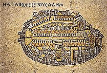

CONTENTS: *Israel *Mideast *Jewish *Hebrew *Yiddish *Holocaust *Miscellanea (Fun, Odd or Different) *Queer
This
Jewish Ring site |

|


 PowerPoint slide
show on the Middle East conflict
PowerPoint slide
show on the Middle East conflict

 National Photo Collection
Israelimages.com: "Looking for
pictures online about kibbutz life? Want to see what President Ezer
Weizman looks like? Interested in a photograph of a Bedouin family, or
new Ethiopian immigrants? Your online search should not have to go much
farther than Israelimages.com, which describes itself as the "Web's
leading collection of photgraphs and images of Israel and the
Holyland."...The website is well built, with easy navigation allowing for
quick access to the subject of your choosing - from Jerusalem to
Archaeology to Lifestyle."
Ethnic
and Religious Communities in Israel: the nation is a mosaic, among the
pieces are:
National Photo Collection
Israelimages.com: "Looking for
pictures online about kibbutz life? Want to see what President Ezer
Weizman looks like? Interested in a photograph of a Bedouin family, or
new Ethiopian immigrants? Your online search should not have to go much
farther than Israelimages.com, which describes itself as the "Web's
leading collection of photgraphs and images of Israel and the
Holyland."...The website is well built, with easy navigation allowing for
quick access to the subject of your choosing - from Jerusalem to
Archaeology to Lifestyle."
Ethnic
and Religious Communities in Israel: the nation is a mosaic, among the
pieces are: > Babylonian Heritage Center > The Bedouins > Beit Daniel - The Center for Progressive Judaism in Tel Aviv > Black Hebrews > Brasil in Israel Home Page > Christian Communities of Israel > Circassian Home Page [Best of the Net] > Druze Heritage Center > Ethiopian Jewish Heritage > Israel Association for Ethiopian Jews > Masorti Judaism > The Museum of Bedouin Culture > Neve Shalom / Wahat al-Salam > Oz Veshalom - Netivot Shalom > The Sephardic-Moroccan Page > Shorashim > Telfed - South African Zionist Federation
Israeli
cities and towns: "Which Israeli cities and towns have the highest
standard of living? This was the question raised in a recent survey
conducted by Israel's Central
Bureau of Statistics."
Worldskip: Israel: all sorts of
Israel-related links gathered together
-Politics: Israel/Jewish Politics & Israel-Arab Relations -Judaism: Identity, Holidays, Essays, Classifications... -Culture: Museums, Music, Food, Language, Literature... -Local: Jewish Communities & Local Resources -People: Social & Relationships, Singles & Personals... -History: Ancient Israel, Diaspora, Modern Israel, Genealogy... -Antisemitism: The Holocaust, "Anti-Zionism", Neo-Facism... -Information: Internet, News, Weather, Israel/Middle East... -Travel: General Travel & The Israel Experience, Aliyah... -Business: Economics & Technology, Businesses/Commercial... -Academic: Universities & Schools, Education, Basic Science... -Global: World Jewish Organizations
Michigan State University -
Israeli Students Organization: read online news from Israel, listen to
live broadcasts, Israeli music, links for Israelis, about Israel, Hebrew,
pictures, and more..
Nana: an Israeli portal/search engine:
"The entire site appears not only in Hebrew, but in English, Russian and
Arabic as well."
El Al Israel Airlines
@The Source Israel Online
Magazine: "geared for people who are interested in seeing and learning
about Israel through its history, arts and cultures"
Gateway to Israel:
"includes travel itineraries, short articles on Jewish holidays and
current affairs, photographs of Israel"
eLuna.com: "Are you planning a trip to
Israel and looking for Kosher restaurants where you can dine? Now you can
do your searching on the web. eLuna.com claims to be the "best resource
for kosher restaurants in Israel"..."
Tel Aviv Insider: a guide to
the vibrant city of Tel Aviv. This guide is not a dry collection of
facts, but rather warm insights from a Tel Aviv resident...with definitive
information about what to see - where to be seen - what to do - where to
shop and dine - and how to get there... A special section of this site
deals with architecture and the preservation of historic buildings of
beauty... [also] information how to get around the city, where to dine,
what to see and what to do.
Mitos: Online bookstore, including music
and videos: "They have a Hebrew keyboard feature to type in authors'
names/book titles, for those of you who don't have Hebrew Windows 95 or
Hebrew Windows 98.
 Improve your mind at
one of several Israeli Universities, such
as:
Improve your mind at
one of several Israeli Universities, such
as:
 The Virtual Jewish University:
"Bar-Ilan University's "Virtual Jewish University" is the hottest, newest
Jewish studies program on the Internet. The VJU offers anybody, anywhere,
full undergraduate college credit for academic study, transferable to
universities of distinction around the world...Technical requirements for
the online studies include the RealMedia video/audio player. The latest
version of either Netscape or Microsoft Internet Explorer is recommended.
Hebrew fonts are only necessary for Israeli students taking the courses in
Hebrew."
Israel - A
Light unto the Nations: "This is a new website dedicated to Israel's
contributions to World-Wide Technology throughout its 50 years of
Statehood. The website provides a showcase displaying how a small
developing nation shares its innovations with the rest of the world. The
site has highlighted four main areas of technology; medicine, agriculture,
military, and modern conveniences."
The Virtual Jewish University:
"Bar-Ilan University's "Virtual Jewish University" is the hottest, newest
Jewish studies program on the Internet. The VJU offers anybody, anywhere,
full undergraduate college credit for academic study, transferable to
universities of distinction around the world...Technical requirements for
the online studies include the RealMedia video/audio player. The latest
version of either Netscape or Microsoft Internet Explorer is recommended.
Hebrew fonts are only necessary for Israeli students taking the courses in
Hebrew."
Israel - A
Light unto the Nations: "This is a new website dedicated to Israel's
contributions to World-Wide Technology throughout its 50 years of
Statehood. The website provides a showcase displaying how a small
developing nation shares its innovations with the rest of the world. The
site has highlighted four main areas of technology; medicine, agriculture,
military, and modern conveniences."

 THE
BALFOUR DECLARATION: The British declared support for a national
home in Palestine for Jews in the 1917 Balfour Declaration. But what is
the legend surrounding the declaration?
THE
BALFOUR DECLARATION: The British declared support for a national
home in Palestine for Jews in the 1917 Balfour Declaration. But what is
the legend surrounding the declaration?


 Israeli Embassy, Washington D.C.:
"from basic organizational information about the embassy departments and
staff to more general information for anyone interested in Israel, its
current affairs and culture...The Embassy website has links to consulates
in other parts of the United States."
Israeli Embassy, Washington D.C.:
"from basic organizational information about the embassy departments and
staff to more general information for anyone interested in Israel, its
current affairs and culture...The Embassy website has links to consulates
in other parts of the United States."
 IDF Spokesman's Unit (Israel
Defense Forces)(at the Ministry of Foreign Affairs site); receive general
information on the IDF including articles on its history, mission,
organizational structure, corps and doctrine, as well as pictures of rank
badges and emblems. In the future, it will be possible to receive IDF
Spokesman's announcements and in a later stage interactive elements will
be introduced.
IDF Spokesman's Unit (Israel
Defense Forces)(at the Ministry of Foreign Affairs site); receive general
information on the IDF including articles on its history, mission,
organizational structure, corps and doctrine, as well as pictures of rank
badges and emblems. In the future, it will be possible to receive IDF
Spokesman's announcements and in a later stage interactive elements will
be introduced.
 IDF Soldiers Homepage:
"designed by combat soldiers, our purpose: to show the world how
soldiers really act, what is important to soldiers and what soldiers
think. You can find here tips in English and Hebrew, jokes, stories,
articles, contests and [] more..."
Eli Cohen: "Eli Cohen, a Mossad agent
in Syria in the 1960s, succeeded in infiltrating the Syrian government and
providing information vital to Israeli security for several years. Then,
on the fateful morning of January 24, 1965 Syrian secret service agents
burst into Eli's flat while he was sending a message to Israel. Eli was
taken prisoner and later hanged in the main square of Damascus. How did
the Syrians discover Eli Cohen's true identity? Who informed on him? The
website devoted to Eli Cohen is handsomely presented, with an interactive
spy adventure, photographs, and plenty of information. You can sign a
petition to call for a national Israeli holiday in Eli's memory or a
petition calling for Syria to return Eli's remains for burial in Israel."
IDF Soldiers Homepage:
"designed by combat soldiers, our purpose: to show the world how
soldiers really act, what is important to soldiers and what soldiers
think. You can find here tips in English and Hebrew, jokes, stories,
articles, contests and [] more..."
Eli Cohen: "Eli Cohen, a Mossad agent
in Syria in the 1960s, succeeded in infiltrating the Syrian government and
providing information vital to Israeli security for several years. Then,
on the fateful morning of January 24, 1965 Syrian secret service agents
burst into Eli's flat while he was sending a message to Israel. Eli was
taken prisoner and later hanged in the main square of Damascus. How did
the Syrians discover Eli Cohen's true identity? Who informed on him? The
website devoted to Eli Cohen is handsomely presented, with an interactive
spy adventure, photographs, and plenty of information. You can sign a
petition to call for a national Israeli holiday in Eli's memory or a
petition calling for Syria to return Eli's remains for burial in Israel."
 IDF Memorial Day
The Jewish Agency Inforamtion
Center: Aliyah
AACI - Pre Aliyah
information: from the Association of Americans and Canadians in Israel
IDF Memorial Day
The Jewish Agency Inforamtion
Center: Aliyah
AACI - Pre Aliyah
information: from the Association of Americans and Canadians in Israel
 Peace Now, which
fights for the end of Israeli occupation and for reconciliation between
Israelis and Palestinians
Peace Now, which
fights for the end of Israeli occupation and for reconciliation between
Israelis and Palestinians
 YITZHAQ RABIN z"l, 1922-1995
YITZHAK RABIN: the
late prime minister's speeches, photographs and the story of his
assassination
The Konformist - Who
Murdered Yitzhak Rabin?
YITZHAQ RABIN z"l, 1922-1995
YITZHAK RABIN: the
late prime minister's speeches, photographs and the story of his
assassination
The Konformist - Who
Murdered Yitzhak Rabin?

JERUSALEM * Y'RUSHALAYIM, one of the world's holiest cities, is the capital of the State of Israel and the focal point of the Jewish people.

Kotel Kam: Live camera from the Kotel
+ Send a Prayer

 The
latest Hebrew news from KOL ISRAEL: (the Voice of Israel), including
radio and TV broadcasts; news, political discussions and historical
documentaries; special page of Rabin assassination broadcasts (NOTE:
currently inactive as a court case progresses)
RESHET: Israel's channel 2 broadcaster,
started broadcasting its programs over the net. Every Monday and Thursday
- live broadcast from the Israeli channel 2
Florentene: great Israeli TV
series, from gay director Eytan Fox, about 20-somethings in hip Tel Aviv
neighborhood Florentene, including several major gay characters; very
cutting-edge
More on Florentene
More on
Florentene
More on Florentene
iGuide - Israeli Internet
Guide : Entertainment : Music
Jerusalem of Gold: "It all
began when Naomi Shemer was invited, together with four other
colleagues, to compose a song for the second and non-competitive part of
the 1967 Israel Song Festival"..."a website devoted to a song that has
become part of Israeli history. This is the song that marked the longing
for Jerusalem and which quickly was changed to celebrate the city's
reunification. This is the song by soldier, Shuli Natan, that became an
instant success, and touched upon the hearts of many...."..."Jerusalem of
Gold" was selected as "Song of the Jubilee" on Israel's 50th Independence
Day, celebrated in 1998. The wonderful lyrics and the enchanting melody
make this a song worthy of representing Israel anywhere, anytime."
RadioIsrael.com: * A weekly
THREE-HOUR radio broadcast * Links to live radio broadcasts from Israel *
Late-breaking Israeli music news
IsraelHour Internet
Broadcasts: including: Ofra Haza, Benzeen, Rita, Dudu Fisher, Kaveret
(Poogy), Ivri Lider, Shalom Hanoch, and more
live and recorded
broadcasts in Hebrew from Miami, Toronto
Israeli music on
mp3
Magda - Israeli Ethnic Music: a
specialized Israeli ethnic music label whose aim is to combine the musical
expression of cultures in the region.
Israeli and Jewish Music
Links Page
Israeli Punk Scene
Galei Zahal Israeli charts
The
latest Hebrew news from KOL ISRAEL: (the Voice of Israel), including
radio and TV broadcasts; news, political discussions and historical
documentaries; special page of Rabin assassination broadcasts (NOTE:
currently inactive as a court case progresses)
RESHET: Israel's channel 2 broadcaster,
started broadcasting its programs over the net. Every Monday and Thursday
- live broadcast from the Israeli channel 2
Florentene: great Israeli TV
series, from gay director Eytan Fox, about 20-somethings in hip Tel Aviv
neighborhood Florentene, including several major gay characters; very
cutting-edge
More on Florentene
More on
Florentene
More on Florentene
iGuide - Israeli Internet
Guide : Entertainment : Music
Jerusalem of Gold: "It all
began when Naomi Shemer was invited, together with four other
colleagues, to compose a song for the second and non-competitive part of
the 1967 Israel Song Festival"..."a website devoted to a song that has
become part of Israeli history. This is the song that marked the longing
for Jerusalem and which quickly was changed to celebrate the city's
reunification. This is the song by soldier, Shuli Natan, that became an
instant success, and touched upon the hearts of many...."..."Jerusalem of
Gold" was selected as "Song of the Jubilee" on Israel's 50th Independence
Day, celebrated in 1998. The wonderful lyrics and the enchanting melody
make this a song worthy of representing Israel anywhere, anytime."
RadioIsrael.com: * A weekly
THREE-HOUR radio broadcast * Links to live radio broadcasts from Israel *
Late-breaking Israeli music news
IsraelHour Internet
Broadcasts: including: Ofra Haza, Benzeen, Rita, Dudu Fisher, Kaveret
(Poogy), Ivri Lider, Shalom Hanoch, and more
live and recorded
broadcasts in Hebrew from Miami, Toronto
Israeli music on
mp3
Magda - Israeli Ethnic Music: a
specialized Israeli ethnic music label whose aim is to combine the musical
expression of cultures in the region.
Israeli and Jewish Music
Links Page
Israeli Punk Scene
Galei Zahal Israeli charts
 The Achinoam Nini
Page
Mashina
The Achinoam Nini
Page
Mashina
 Kaveret's Unofficial Home Page,
aka Poogy, my fave group-that-was, which represented Israel at Eurovision
in 1974
Poogy's Official Site: "Danny Sanderson,
Gidi Gov, Yoni Rechter, Alon Olearchik, Efraim Shamir, Itzhak Klepter and
Meir Fenigstein are the original, legendary Israeli Rock Band."
Kaveret's Unofficial Home Page,
aka Poogy, my fave group-that-was, which represented Israel at Eurovision
in 1974
Poogy's Official Site: "Danny Sanderson,
Gidi Gov, Yoni Rechter, Alon Olearchik, Efraim Shamir, Itzhak Klepter and
Meir Fenigstein are the original, legendary Israeli Rock Band."
 Ofra Haza: who
died of AIDS at age 41 in February 2000. This page has links to articles
about Ofra, her music and her illness. It also includes a
two-hour Ofra Haza
tribute from IsraelHour, including * Ofra's best-known songs *
interviews with Ellis Shuman, webmaster of the Israeli Culture web site
(http://israelculture.about.com), on how Israelis have reacted to the news
-Menachem Granit, Program Director at Reshet Gimmel in Israel, on how
Israel's only exclusively-Israeli music station handled Ofra's death
-Koby Oshrat, Director of Cultural Affairs at the Israeli Consulate in
Los Angeles, on his close friendship with Ofra Haza * Portions of an
interview with Ofra Haza, originally broadcast on "The Israel Hour" --
Summer 1996
Ofra Haza: who
died of AIDS at age 41 in February 2000. This page has links to articles
about Ofra, her music and her illness. It also includes a
two-hour Ofra Haza
tribute from IsraelHour, including * Ofra's best-known songs *
interviews with Ellis Shuman, webmaster of the Israeli Culture web site
(http://israelculture.about.com), on how Israelis have reacted to the news
-Menachem Granit, Program Director at Reshet Gimmel in Israel, on how
Israel's only exclusively-Israeli music station handled Ofra's death
-Koby Oshrat, Director of Cultural Affairs at the Israeli Consulate in
Los Angeles, on his close friendship with Ofra Haza * Portions of an
interview with Ofra Haza, originally broadcast on "The Israel Hour" --
Summer 1996
"Danna International, or Sharon Cohen, is one of the biggest popstars in Israel. Her material is mostly in the dance/techno-style, but she also shows clear influences from cabaret, Israeli pop and Arabic music. She has so far released three albums, one mini-album, one compilation album and a few singles, all in Israel. In addition to great fame in Israel (where she personified Girl Power long before Spice Girls were even conceived of), she is famous on the NY club scene - and HUGE on the pirate music market in the Arab world... However, certain aspects of Danna's private life has made her the object of controversy both in her native Israel and across the border in the neighbouring countries. Sharon Cohen happens to be transsexual, and this has made her an abomination in the eyes of many leading religious figures in Israel. This fact was also the focus of most coverage on Danna in the European press following the announcement of her participation for Israel in the '98 Eurovision..."
Dana International: all the
up-to-date news on Dana along with full-lenth video clips of her music
videos and a live performance from Israeli television
Dana Webring
Dana
International: Viva la Diva!
Dana
International page
 Eurovision Song
Contest: great page, very thorough
iGuide - Israeli
Internet Guide: includes
Eurovision Song
Contest: great page, very thorough
iGuide - Israeli
Internet Guide: includes* Achla * Altavista, a version of the international search engine, for Israeli sites only * Asakim * Dapey Reshet * Gashash: searches in Hebrew descriptions of hundreds of sites * Global Jewish Networking: a good list of many Jewish links * Hareshima: list of Jewish and Israeli sites * Israel Xpress * Ituran Parallel search engine * JCN's Jewish & Israeli Bookmarks List * Maven Jewish/Israel Index * Migvan * SABRAnet * Sababa * Tapuz Hebrew sites index * The Israel Machine Search Engine * The Ultimate Jewish/Israel Link Launcher * Toranet Global Tora Community: all information on any matter concerning Jews includes commerce, Jewish education, Torah discussions, kashrut, rabbis and recreation. * Walla * ZehuZe * Zoolo: Hebrew site index and search engine * Captain Internet: the web version of the famous Ha'aretz internet critic * Ido Amin's Site of the Week * top10 The Israeli TOP 10% website awards page * Artificia's cool links
* Dapey Reshet - listings and reviews in categories including
virtual shops, job opportunities and tourist information sites. In
Hebrew.
* Guide to Web Resources in Israel
* Hot Max - Jewish/Israeli related sites.
* iGuide - Israeli Internet directory in English and Hebrew provides
a list of Israeli domain names and ISPs.
* Israeli Top 10% Web Sites - arts, business, education,
restaurants, computers, etc.
* Nana Portal - index of Israeli web sites provided in Hebrew,
English, Russian, and Arabic.
* NetKing - multi-topic directory (in English/Hebrew).
* SABRAnet - provides accurate and up-to-date sites related to
Israel.
* Tapuz - a sorted list of the Hebrew web sites.
* Walla! - Hebrew/English index for all Israeli sites and the best
of the web sites.
Israeli
website reviews
Internet Domains in Israel:
a BIG list
Bismillah ar-rahmaan ar-rahiim,
I extend my deepest condolences to Queen Noor, her family and the Jordanian people on the loss of a great world leader, King Hussein, whose 46-year reign demonstrated his bravery in both war and peace, and his deep caring for the progress of his beloved Jordan. May his expansive vision inspire the leaders and people of the area to reconcile in his memory.
*********************************************************************
 Government of the Hashemite Kingdom
of Jordan: with a lovely graphics imagemap
Government o the Arab Republic of
Egypt: tour Abdeen Palace and the office of President Hosni Mubarak
Government of the Hashemite Kingdom
of Jordan: with a lovely graphics imagemap
Government o the Arab Republic of
Egypt: tour Abdeen Palace and the office of President Hosni Mubarak
 Comments? Write me at RMIsaac@eskimo.com
Comments? Write me at RMIsaac@eskimo.com